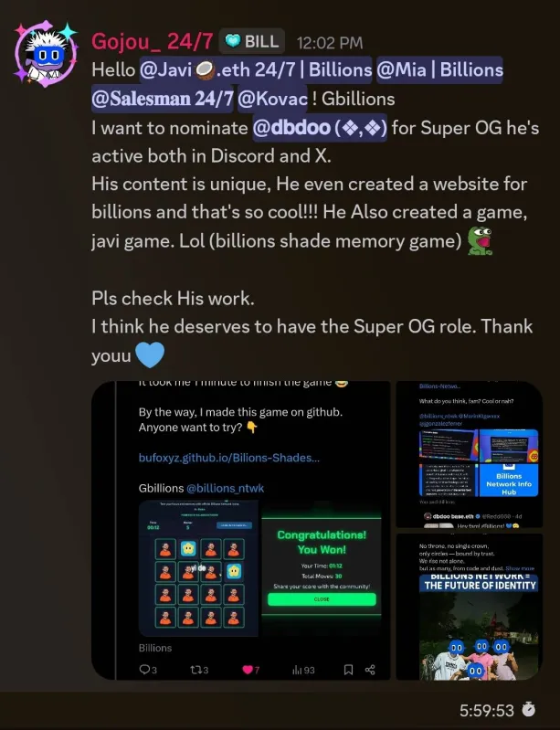
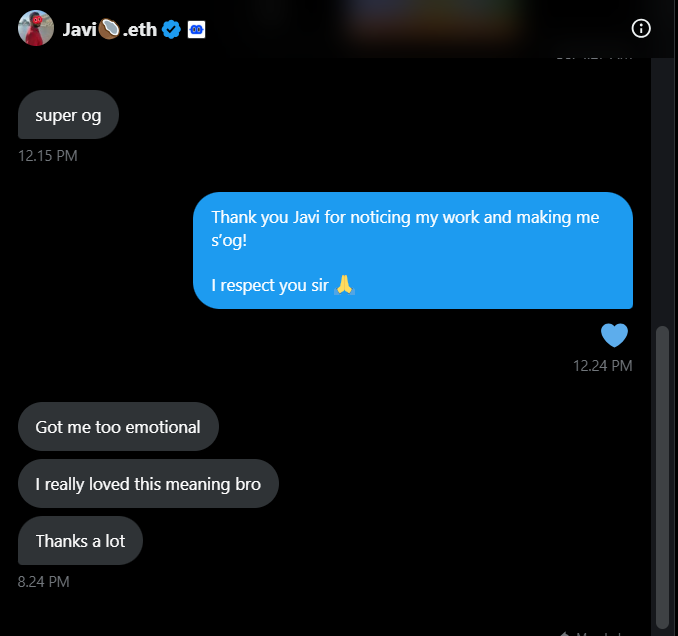
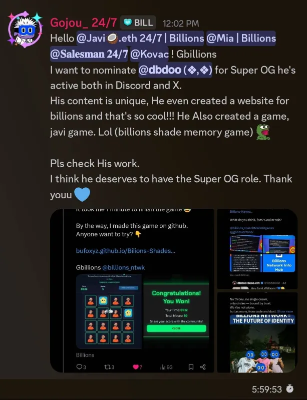
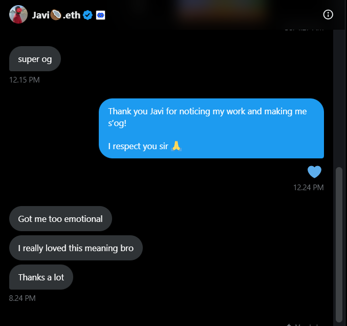

Welcome to the Billions Network! We're building a vibrant, decentralized community that sits at the intersection of Human creativity and AI innovation. Think of us as the digital hub where the smartest humans collaborate with cutting-edge AI to shape the future of identity and technology. It's not just a network; it's a launchpad for the next generation of decentralized pioneers. Join the mission, claim your role, and let's build something truly massive together!
"Verified ones are not created for separation, but rather to unite."
Claimable Roles
- @Billions Genesis — Holder of the Billions Genesis NFT.
- @Verified Human — Members who have completed the human verification process.
- @ID Evangelist — Dedicated members who actively promote Billions ID.
- @Beta Tester — Official Billions Network Beta Tester.
- @Meme Master — Experienced member in creating engaging memes.
- @Content Creator — Recognized content creator on various social platforms.
- @Raids — Members who actively support Billions on X (Twitter). Go to #｜✖｜twitter
Earnable Roles
- @Super OG — Role reserved for the most dedicated and super early contributors.
- @OG — Recognized contributor with positive and impactful values in the community.
- @Real Human — Be an active member and engage authentically (not a bot).
Other Roles
- @Early Adopter — Super early community members.
My Verified Journey & Achievements
This section highlights my recognition and the key persons involved in my journey:
- Role granted by moderator Javi .eth as a sign of respect for my consistent work.
- Nominated for Super OG by fellow pioneer, Goujou_24/7.
- Joined Discord — March 25, 2025
- Contributed content on X about Billions — August 19, 2025
Visual Proofs (Click to Enlarge):
 



You can verify my recent activity and creative work by monitoring my X profile: https://x.com/Redd660
Join Billions Network Airdrop!
Join Billions: The Future of Human & AI Collaboration!
Be part of the revolution—Billions Network is now open for sign-ups!
🎁 Reward: Unlimited potential awaits
🔗 Sign up here: https://signup.billions.network?rc=WQROTQLC
✅ How to Participate:
- Register with your email
- Complete all tasks
- Connect your wallet (new or testnet wallets are accepted)
- Daily Claim
- You're all set!
Why I Want to Join as Community Helper
My goal is to become an active part of the Billions Network community — assisting others, contributing creative ideas, and helping it grow together. Earning the Super OG role would represent genuine participation and dedication to the network’s vision.
My @Super OG Mission & Daily Commitment
I am committed to demonstrating continuous dedication to the Billions Network. My daily commitment is focused on driving growth and visibility:
- I pledge to post and create content daily about Billions Network on X.
- I commit to engaging with new members and actively boosting community morale.
- I will constantly monitor community sentiment and share actionable feedback with the team.
My current activity and creative work can be viewed directly on my profile: https://x.com/Redd660